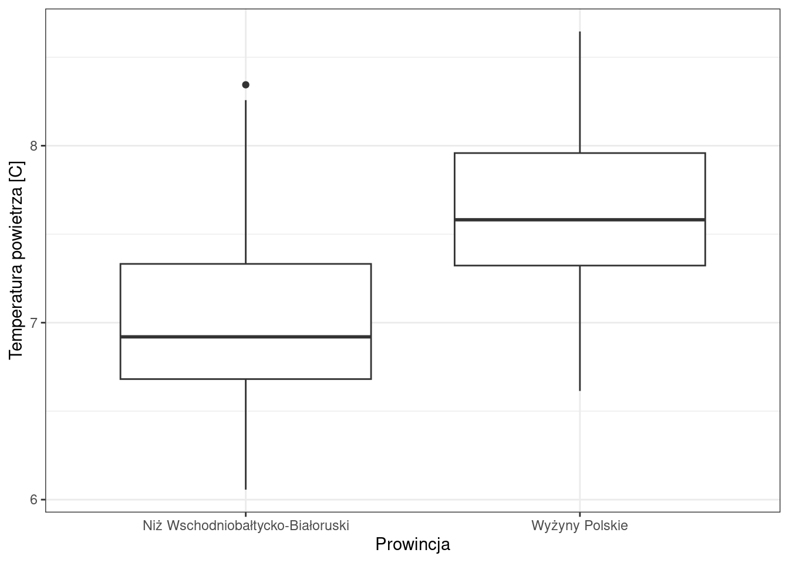

library(ggplot2)ggplot(pomiary_pol2, aes(x = prowincja, y = annual_tavg)) +geom_boxplot() +labs(x ="Prowincja", y ="Temperatura powietrza [C]") +theme_bw()

Testowanie istotności różnic przy założeniu hipotezy dwustronnej tj. \(\mu_{Niż} \neq \mu_{Wyżyny}\)
t.test(annual_tavg ~ prowincja, data = pomiary_pol2)
Welch Two Sample t-test
data: annual_tavg by prowincja
t = -13.475, df = 338.76, p-value < 2.2e-16
alternative hypothesis: true difference in means between group Niż Wschodniobałtycko-Białoruski and group Wyżyny Polskie is not equal to 0
95 percent confidence interval:
-0.7378497 -0.5498738
sample estimates:
mean in group Niż Wschodniobałtycko-Białoruski
6.979376
mean in group Wyżyny Polskie
7.623238
Intepretacja wyników
Poziom prawdopodobieństwa p (p-wartość) - jest to wyliczany w pakietach komputerowych najmniejszy poziom istotności, przy której wyliczona wartość testującej statystyki doprowadza do odrzucenia hipotezy zerowej.
Jeśli p-wartość jest poniżej założonego poziomu istotności (np. 0.05) tzn. że hipotezę zerową możemy odrzucić na rzecz hipotezy alternatywnej.
W powyższym przykładzie:
Hipoteza zerowa: prawdziwa różnica w średnich jest równa 0
Hipoteza alternatywna: Prawdziwa róznica w średnich nie jest równa 0.
P-wartość < 2.2e-16
P-wartość jest mniejsza od 0.05 a zatem możemy odrzucić hipotezę zerową (różnica w średnich równa 0) na rzecz hipotezy alternatywnej (różnica w średnich różna od 0)
Pytanie: Czy średnia temperatura powietrza na Niżu i na Wyżynach różni się istotnie?
Odpowiedź: Średnia temperatura na Niżu i na Wyżynach różni się istotnie.
Przykład: Czy średnia temperatura (annual_tavg) Niżu Wschodniobałtycko-Białoruskiego jest istotnie wyższa od tempratury na Wyżynach Polskich?
Testowanie istotności różnic przy założeniu hipotezy jednostronnej tj. \(\mu_{Niż} > \mu_{Wyżyny}\)
t.test(annual_tavg ~ prowincja, data = pomiary_pol2, alternative ="greater")
Welch Two Sample t-test
data: annual_tavg by prowincja
t = -13.475, df = 338.76, p-value = 1
alternative hypothesis: true difference in means between group Niż Wschodniobałtycko-Białoruski and group Wyżyny Polskie is greater than 0
95 percent confidence interval:
-0.7226726 Inf
sample estimates:
mean in group Niż Wschodniobałtycko-Białoruski
6.979376
mean in group Wyżyny Polskie
7.623238
Jaka jest interpretacja powyższego wyniku testu?
Przykład: Czy średnia temperatura (annual_tavg) Niżu Wschodniobałtycko-Białoruskiego jest istotnie niższa od tempratury na Wyżynach Polskich?
Testowanie istotności różnic przy założeniu hipotezy jednostronnej tj. \(\mu_{Niż} < \mu_{Wyżyny}\)
t.test(annual_tavg ~ prowincja, data = pomiary_pol2, alternative ="less")
Welch Two Sample t-test
data: annual_tavg by prowincja
t = -13.475, df = 338.76, p-value < 2.2e-16
alternative hypothesis: true difference in means between group Niż Wschodniobałtycko-Białoruski and group Wyżyny Polskie is less than 0
95 percent confidence interval:
-Inf -0.5650509
sample estimates:
mean in group Niż Wschodniobałtycko-Białoruski
6.979376
mean in group Wyżyny Polskie
7.623238
Jaka jest interpretacja powyższego wyniku testu?
Wykorzystując dane w pliku pomiary_pol.csv sprawdź czy średnia temperatura roczna (annual_tavg) na Wyżynach Polskich różni się od Masywu Czeskiego? Stwórz wykres porównujący tą zmienną dla tych prowincji. Określ czy różnica pomiędzy średnimi jest istotna statystycznie.
14.1.2 Test t-Studenta dla prób zależnych
Dotyczy porównania ze sobą tej samej grupy obserwacji
Próby są zależne, czyli wynik pomiary w drugim badaniu zależy od pierwszego (dotyczy tej samej obserwacji)
Służy określeniu wielkości zmian pomiędzy pomiarami
library(dplyr)
Attaching package: 'dplyr'
The following objects are masked from 'package:stats':
filter, lag
The following objects are masked from 'package:base':
intersect, setdiff, setequal, union
Test t-Studenta dla prób zależnych, jeśli dane są w formacie szerokim.
t.test(pomiary_pol$tmax_4, pomiary_pol$tmax_9, paired =TRUE, alternative ="greater")
Paired t-test
data: pomiary_pol$tmax_4 and pomiary_pol$tmax_9
t = -528.83, df = 1494, p-value = 1
alternative hypothesis: true mean difference is greater than 0
95 percent confidence interval:
-5.26396 Inf
sample estimates:
mean difference
-5.247628
Test t-Studenta dla prób zależnych, jeśli dane są w formacie długim.
#t.test(value ~ name, data = pomiary_pol_l, paired = TRUE)
Jaka jest interpretacja powyższego wyniku?
Wykonaj test dla określenia czy maksymalna temperatura powietrza w kwietniu (tmax_4) jest niższa od maksymalnej temperatury września (tmax_9). Sformułuj hipotezę zerową oraz hipotezę alternatywną oraz zinterpretuj wynik testu.
14.2 Testowanie istotności różnic wariancji
Pozwala na porównywanie wariancji w dwóch grupach pomiarów
var.test(annual_tavg ~ prowincja, data = pomiary_pol2)
F test to compare two variances
data: annual_tavg by prowincja
F = 0.8629, num df = 161, denom df = 178, p-value = 0.3405
alternative hypothesis: true ratio of variances is not equal to 1
95 percent confidence interval:
0.6384037 1.1690499
sample estimates:
ratio of variances
0.8628984
Interpretacja:
Wartość p-value dla testu F p = 0.3405 jest większa od założonego poziomu istotności (0.05). Nie ma istotnych różnic między wariancją dla obu grup (Niżu oraz Wyżyn).
14.2.1 Test Levene’a
Porównywane grupy w testach parametrycznych powinny mieć podobne wariancje
Do weryfikacji czy zachowana jest homogoniczność wariancji w grupach stosuje się, między innymi, test Levene”a